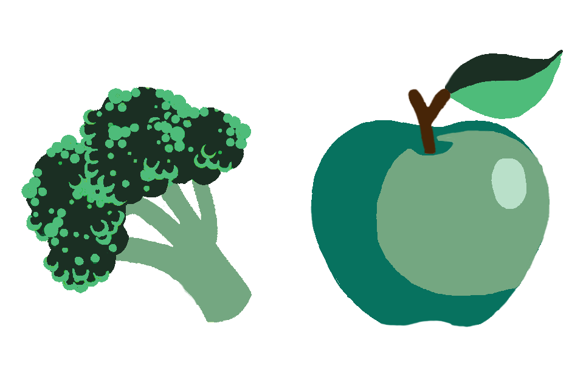

Have you ever heard of a low-carbon diet? By eating more plant-based foods and less meat products, you can help reduce your impact on the planet! A recent study by Nature found that Western diets (high in red meat) fuel climate change and cause imbalances in ecosystems and biodiversity.
The production of animal products generates high levels of greenhouse-gas emissions. For instance, cows emit the greenhouse gas methane when they digest food. They also require a lot of feed, which in turn requires a lot of water, land and fertilizer.
Growing plants, as opposed to breeding cattle, requires less energy, water and land. It also produces less greenhouse gas emissions and pollutants. Plants require certain resources, but overall, meat products are significantly more emissions-intensive.
According to the Nature study, if we all start adopting more plant-based diets, we could reduce the greenhouse gas emissions of the food system by more than half.
Trees are the last lines of defense against climate breakdown. This means that planting trees, shrubs and protecting forests is something you can do to help tackle climate change. As trees grow, they fight climate change by removing carbon dioxide from the air, storing the carbon and releasing oxygen into the atmosphere instead.
Tom Crowther, a climate change ecologist at ETH Zurich University, has recently carried out some research indicating that there is enough room on the planet for an additional 1.2 trillion trees. He believes that planting these additional trees would significantly reduce carbon dioxide emissions in the atmosphere. His research is currently under review for publication in the journal Science.
If you don’t have time to go out and plant some trees yourself, you can always contribute in other ways. Ecosia, for example, is a search engine that uses the ad revenue from searches to plant trees all over the world. By searching with Ecosia from time to time, you can help reforest the planet!
Transportation is one of the biggest sources of greenhouse gas emissions like carbon dioxide. Almost all greenhouse gas emissions emitted by vehicles come from personal, commercial vehicles.
Therefore, another step you can take to fight climate change is to start cycling! Bikes require minimal fossil fuel and are a pollution-free mode of transport. This means that we would avoid a large amount of greenhouse gas emissions if more people started using bikes instead of cars.
Bikes are the best choice, but if that’s not an option for you, alternatives like electric vehicles or public transport are also a good option. After all, public transport consumes less fuel overall, and therefore emits less carbon dioxide.
You can find a list of the best "green cars" of 2019 here. It must be noted that even though no greenhouse gas emissions directly come from electric vehicles, they run on electricity that is, mostly, produced from fossil fuels.
You can take many different forms of individual and collective actions that can affect governmental policies. How?
You can begin to influence governmental actors or policies by voting! Find out which political parties in your country call for stronger action on the issue of climate change and vote for them in your general elections.
You can also influence governmental policies through donating money or communicating with public officials. Sadly, this kind of participation is rare and only a few deeply committed individuals actually go this far. However, if we want to tackle climate change, we need more people to take action!
Most politicians won’t take measures unless they believe a significant number of people support their actions. If you show concern and communicate this concern, politicians may be forced to act. Contact your political leaders and fight for the most effective pro-environmental policies at a national and international level.
Energy use is another large source of global greenhouse-gas emissions. Taking some conscious steps when it comes to energy use is an effective way to reduce energy consumption and tackle climate change.
You can switch to a clean, renewable gas and electricity supplier. In the UK, Bulb offers 100% renewable electricity and 100% carbon neutral gas. You can also use energy efficient lighting. For instance, LEDs use less energy and last longer than traditional incandescent light bulbs.
Reducing your heating and cooling energy use is also important. Additionally, remember to switch off your lights, computer, and TV when not in use. This will ensure you don’t use unnecessary power.
You can also make your home more energy efficient by finding the most energy efficient appliances. Look for energy efficient labels when you buy your TV and computer.
-
ACT N

W
-
Step 1:

Switch to a plant-based diet
-
Step 2:

Get started with gardening
-
Step 3:

Green your commute
-
Step 4:

Vote to influence policy
-
Step 5:

Reduce your household energy use
-
Remember...
ACT N

W